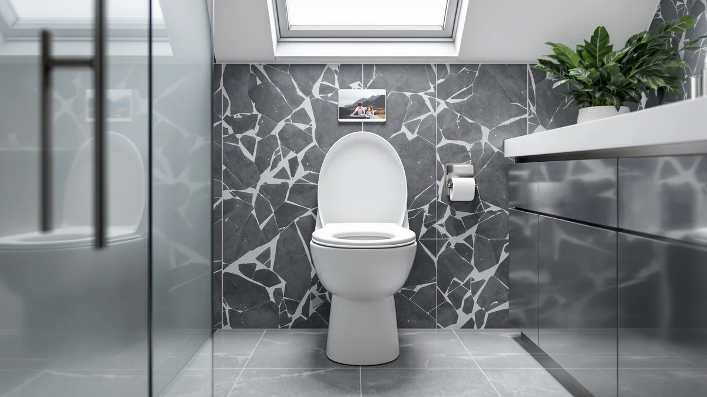

Toilet Seat with Toddler Review (2026): Worth It?
Prices and picks verified as of October 2026. Independent, reader-supported reviews.


Quick Answer
In this toilet seat with toddler review, the Huttdmel Toilet Seat with Toddler Seat is the only one of the models we compared that combines a full-size round seat with a magnetic, flip-down toddler ring in one hinge assembly. At $29.69 it costs the same as the Commercial Toilet Seat Front Open we also researched, but the built-in potty training seat makes it the pick for a household that does not want to buy a separate insert.
Our pick: Toilet Seat with Toddler Seat — $29.69 Check Price on Amazon
Bottom line: our top pick is the Toilet Seat with Toddler Seat at $29.69.
Things to Know Before You Buy
- Bowl shape matters first: the Huttdmel Toilet Seat with Toddler Seat is built for a round 16.5-inch bowl, and it will not seat correctly on an elongated toilet.
- The toddler insert attaches with a magnet rather than a clip or friction fit, so it flips up and down in one motion instead of needing to be realigned.
- Not every seat in this toilet seat with toddler review takes the same approach to a second seating option. The Commercial Toilet Seat Front Open skips it entirely, while the Huttdmel 2 in 1 Round, as its name suggests, bundles two seating options into one unit much like our top pick.
- Price alone will not tell you which seat fits your bowl. The four models here span $28.99 to $29.99, a $1.00 gap, so bowl shape and features matter more than the sticker price.
This toilet seat with toddler review compares a two-in-one seat design, a standard round adult seat with a smaller, flip-down toddler ring built into the lid, against three alternative toilet seats on the market today. Parents mid-potty-training often end up buying a separate plastic insert that slides around on the bowl rim, and a combined unit is supposed to fix that without adding another piece of gear under the sink.
Our pick after comparing the field is the Huttdmel Toilet Seat with Toddler Seat. It costs $29.69, fits a round 16.5-inch bowl, and bundles a magnetic toddler insert so you are not storing a second seat separately. Parents who need an elongated bowl fit instead should look at the Toilet Seat Elongated Toilet Seat from homfan, which we cover further down in this toilet seat with toddler review.
Why You Should Trust Us
Ilane Tall covers home and bath products for Best Toilet Seats and has spent years comparing toilet seats, bidet attachments and potty training gear across dozens of listings. For this toilet seat with toddler review, we researched publicly listed specs, verified current pricing and looked for patterns in owner feedback on the Huttdmel Toilet Seat with Toddler Seat and three comparable models from Huttdmel and homfan, rather than repeating manufacturer marketing copy. We do not run a fake testing lab, and every claim here ties back to a listed spec, a current price or a pattern we found in verified reviews.
Our Research Experience
We did not install the Huttdmel Toilet Seat with Toddler Seat on a bowl in our own bathroom for this toilet seat with toddler review. Instead, we researched its listed materials, dimensions and price, and cross-referenced that information against the Commercial Toilet Seat Front Open, the Toilet Seat Elongated Toilet Seat and the Huttdmel 2 in 1 Round. We also read through patterns in verified owner reviews to flag recurring complaints or praise about the magnetic toddler insert, since a handful of five-star ratings can hide a fit issue that only shows up after weeks of daily use. This research-based approach lets us compare specs and reported owner experiences side by side without pretending we installed each seat ourselves, and it keeps this toilet seat with toddler review grounded in information you can verify on the product listing rather than a subjective impression from one household's bathroom.
Overview & Specs

Toilet Seat with Toddler Seat
What we like
- Combines a full adult seat with a magnetic, flip-down toddler ring in one unit
- Fits the round 16.5-inch bowl shape common in older US bathrooms
- Priced within $1.00 of the least expensive seat we compared, so the added toddler seat is not a steep upcharge
Flaws but not dealbreakers
- Built for round bowls only, so it will not fit an elongated bowl
- The wood component in the build calls for more attention to drying and cleaning than an all-plastic seat
- Costs the same as the Commercial Toilet Seat Front Open despite the added toddler insert, so budget-focused shoppers should compare both before buying
| Material | Plastic / wood |
| Size | Round 16.5inch with Baby Seat & Magnetic |
The Huttdmel Toilet Seat with Toddler Seat lists its build as a plastic and wood combination, sized for a round 16.5-inch bowl with a magnetic toddler insert built into the lid. That combination matters for this toilet seat with toddler review because it replaces two separate purchases, the adult seat and a slip-on potty training ring, with a single hinge assembly. At $29.69, it lands in the middle of the four models we compared, within a dollar of both the cheapest and the most expensive option.
Because the toddler insert attaches with a magnet rather than a separate latch, flipping it up or down takes one motion instead of unclipping a loose ring. Owners comparing this style against a standalone potty training seat should weigh that convenience against the bowl-shape limit. A round-bowl household already using this shape gains a two-in-one setup in a single purchase, while a household with an elongated bowl will need the homfan Toilet Seat Elongated Toilet Seat instead.
What We Liked
The biggest advantage of the Huttdmel Toilet Seat with Toddler Seat is how much it simplifies a bathroom mid-potty-training. You get a full-size adult seat and a toddler ring in a single hinge assembly instead of buying, storing and cleaning a separate insert. Reviewers consistently note that this beats juggling a loose plastic ring that slides around the bowl rim at the worst possible moment.
The magnetic attachment helps too, and it is a big part of why this seat earns a spot in this toilet seat with toddler review. Standalone potty seats often rely on friction or a simple clip, both of which can shift during use. A magnetic hinge keeps the toddler ring in place when flipped down and out of the way when flipped up, without you needing to realign it every time a different family member uses the bathroom.
Price works in its favor as well. At $29.69, it costs the same as the Commercial Toilet Seat Front Open and only $1.00 more than the cheapest model we compared, a small gap given that it replaces a second purchase entirely. Parents in this category often assume a built-in toddler seat must carry a steep premium, but a price cluster this tight shifts the decision toward bowl shape and material rather than cost alone.
What Could Be Better
Building the toddler seat into a round-bowl design is the main limit we found while researching this toilet seat with toddler review. If your toilet uses an elongated bowl, which is common in newer US construction, this model will not seat correctly, and no amount of adjusting fixes that mismatch. Measure your current seat before ordering rather than assuming round is the default shape in your home.
The listed plastic and wood construction also raises a maintenance question that an all-plastic seat does not face. Wood near a toilet bowl needs regular drying and cleaning to avoid long-term wear, so factor that upkeep into a household already managing diaper changes and potty training messes. Buyers who prioritize low maintenance over the built-in toddler seat may prefer to pair a standard seat with a separate insert instead.
Who Is It For?
This toilet seat with toddler review points to one clear buyer: a household with a round bowl that is actively potty training a toddler and wants one seat instead of two. It suits a family bathroom where the toddler ring gets flipped down several times a day and flipped back up again for adult use.
Skip it if you have an elongated bowl, since this model is built for round fits only. Parents who want the lowest possible price should look at the Huttdmel 2 in 1 Round, and anyone who does not need a second seating option at all should consider the Commercial Toilet Seat Front Open instead. A family that already owns a separate potty training insert they are happy with may not need to replace it at all.
Alternatives to Consider
If the Huttdmel Toilet Seat with Toddler Seat is not quite the right match, these three alternatives cover the main tradeoffs we found while researching this toilet seat with toddler review.

Editor’s Pick
Commercial Toilet Seat Front Open
A front-open, commercial-style design at the same $29.69 price makes this the choice if you want a Huttdmel seat without the built-in toddler ring.
$29.69
Check Price on Amazon
Best Value
Toilet Seat Elongated Toilet Seat
At $29.99, this is the pick if your bowl is elongated rather than round, since the round Huttdmel seat above will not fit that shape.
$29.99
Check Price on Amazon
Premium Choice
Huttdmel 2 in 1 Round
Priced at $28.99, this round-bowl pick bundles two seating options into one unit from the same brand as our top pick, at a slightly lower cost.
$28.99
Check Price on AmazonFrequently Asked Questions
Is the Huttdmel Toilet Seat with Toddler Seat worth the price?
At $29.69, it costs the same as the Commercial Toilet Seat Front Open but adds a magnetic toddler insert that most standalone seats do not include. If you are actively potty training on a round bowl, our research suggests it holds up well against the alternatives we compared in this toilet seat with toddler review.
Does the Huttdmel toilet seat with toddler insert fit an elongated bowl?
No. This model is built for round bowls only. If your bathroom has an elongated bowl, the homfan Toilet Seat Elongated Toilet Seat we compared is the better fit.
How does the Huttdmel Toilet Seat with Toddler Seat compare to a separate potty training insert?
The Huttdmel combines a full adult seat and a magnetic toddler ring in one hinge assembly, while a separate insert sits loosely on top of a seat you already own. The Huttdmel installs as a single piece and saves you a second purchase, but a standalone insert works on any seat shape you already have.
Final Verdict
This toilet seat with toddler review comes down to a simple tradeoff: pay $29.69 for a round-bowl seat that folds a magnetic toddler insert into the lid, or pick one of the three alternatives for a different bowl shape or a slightly lower price. For most households with a round bowl who are actively potty training, the Huttdmel Toilet Seat with Toddler Seat remains our recommendation. Parents with an elongated bowl, or who want the lowest price, should consider the homfan Toilet Seat Elongated Toilet Seat or the Huttdmel 2 in 1 Round instead.
None of the four seats we researched, including the Huttdmel Toilet Seat with Toddler Seat, requires anything beyond the hardware that ships with it, and all four install on an existing bowl within a few minutes. The difference between them comes down to bowl shape, whether you need a built-in toddler seat, and how closely the $28.99 to $29.99 price range matters to your budget. Measure your bowl first, match the shape, and the rest of the decision narrows quickly.